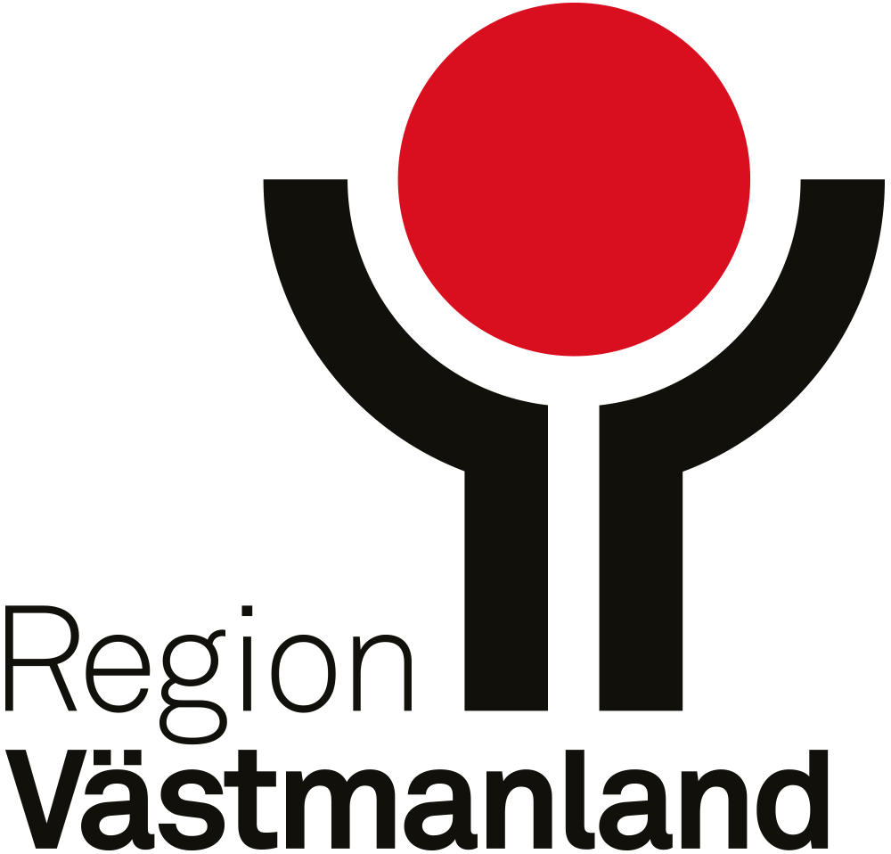

Tillgänglighet till vård och omsorg Västmanland

Inledning
Rapporten visar tillgänglighet i form av avstånd och restid till olika vårdinstanser inom och utanför länet. Tillgängligheten kombineras med demografiska data för att visa hur befolkningen är fördelad. Analysen visas i interakativa kartor på olika geografiska nivåer: 1 kilometers-rutor, regionala statistikområden (RegSO) och kommun. Kartorna visar var det är kort respektive långt till olika vård- och omsorgsverksamheter, både i avstånd och i restid samt hur många som bor i områdena. På så sätt går det att se både var tillgängligheten är god respektive sämre och hur det skiljer sig åt mellan olika delar av länet. Underlaget kan ses som stöd i planering och för att få en bild av var det finns behov av att studera tillgängligheten närmare.
Metod
Statistiken för rutnivån utgörs av ett rutnät med 1 x 1 kilometers rutor som omfattar de områden där befolkningen bor. Regionala statistikområden (RegSO) är en områdesindelning som SCB har tagit fram för att kunna redovisa statistik för delområden inom kommunerna. Områdena är i genomsnitt större än rutorna och utgår från demografiska statistikområden (DeSO), där flera DeSO slagits ihop till större områden som följer kommungränserna i länet.
För att skydda sekretess på rutnivå har befolkning med ett färre antal än 3 ersatts med slumpmässiga värden mellan [0-3]. Värdena i de minsta rutorna bör därav läsas som en indikation. Viss filtrering har även gjorts för vissa privata vårdinstanser i länet.
Avståndet och restiden till vårdinstanser i länet har beräknats med en nätverksanalys (QNEAT3) i programmet QGIS, från mittpunkten i varje 1 x 1 km-ruta, RegSO-område och kommun längs med vägnätet samt utifrån hastighetsgränser och typologi. På RegSO och kommunnivån visas ett genomsnittligt värde för avstånd och restid medan rutnivån visar värdet för varje enskild ruta. Restiden är en uppskattad körtid med bil och tar ej hänsyn till mängden trafik. Från varje geografisk nivå har även avståndet samt restiden beräknats till närmaste vårdinstans och har schablonmässigt stämts av mot stickprov.
I kartorna går det att växla mellan avstånd, restid, total befolkning och efter kön och ålder. Det går även att zooma, visa helskärmsläge och klicka på en ruta eller ett område för att läsa värdena. Vårdinstanserna visas som punkter i kartorna och kan slås av och på.
Källor:
Befolkningsdatan avser år 2025 och kommer från SCB.
Vägnätsdatan är hämtat från Trafikverkets nationella vägdatabas.
Vårdinstanserna är dels hämtat från interna databaser och dels företagsregistret.
Sjukhus
Rutnivå
Kartan visar avstånd och restid till närmaste sjukhus samt befolkning. Växla lager med knapparna uppe till höger.
RegSO
Kartan visar avstånd och restid till närmaste sjukhus samt befolkning. Växla lager med knapparna uppe till höger. Avståndet och restiden är ett genomsnittligt värde för området.
Kommun
Kartan visar avstånd och restid till närmaste sjukhus samt befolkning. Växla lager med knapparna uppe till höger. Avståndet och restiden är ett genomsnittligt värde för området.
Vårdcentraler
Rutnivå
Kartan visar avstånd och restid till närmaste vårdcentral samt befolkning. Växla lager med knapparna uppe till höger.
RegSO
Kartan visar avstånd och restid till närmaste vårdcentral samt befolkning. Växla lager med knapparna uppe till höger. Avståndet och restiden är ett genomsnittligt värde för området.
Kommun
Kartan visar avstånd och restid till närmaste vårdcentral samt befolkning. Växla lager med knapparna uppe till höger. Avståndet och restiden är ett genomsnittligt värde för området.
Hemtjänst
Rutnivå
Kartan visar avstånd och restid till närmaste hemtjänst samt befolkning. Växla lager med knapparna uppe till höger.
RegSO
Kartan visar avstånd och restid till närmaste hemtjänst samt befolkning. Växla lager med knapparna uppe till höger. Avståndet och restiden är ett genomsnittligt värde för området.
Kommun
Kartan visar avstånd och restid till närmaste hemtjänst samt befolkning. Växla lager med knapparna uppe till höger. Avståndet och restiden är ett genomsnittligt värde för området.
Särskilda boenden
Rutnivå
Kartan visar avstånd och restid till närmaste särskilda boende samt befolkning. Växla lager med knapparna uppe till höger.
RegSO
Kartan visar avstånd och restid till närmaste särskilda boende samt befolkning. Växla lager med knapparna uppe till höger. Avståndet och restiden är ett genomsnittligt värde för området.
Kommun
Kartan visar avstånd och restid till närmaste särskilda boende samt befolkning. Växla lager med knapparna uppe till höger. Avståndet och restiden är ett genomsnittligt värde för området.